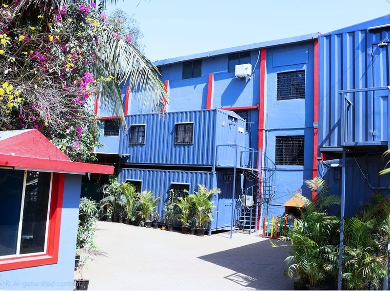

Manufacturing heritage
Dehu Group
A diversified industrial group spanning heavy manufacturing, EPC, O&M, consultancy and logistics, with certified fabrication plants across India.

Manufacturing capability, connectedStochos Engineering & Projects Limited works with Tenaro Global EPC and the Dehu Group on relevant opportunities. Their published capabilities include boiler and power plant solutions, pressure parts, engineered products, heavy engineering, structural design, trading and site work services.
Discuss the requirement with Stochos in Ghana, define the technical and commercial scope with the appropriate teams, and coordinate execution through the agreed project structure.
Discuss a requirementA diversified industrial group spanning heavy manufacturing, EPC, O&M, consultancy and logistics, with certified fabrication plants across India.
Multidisciplinary design, detailing and project engineering from its head office in Pune, India.
Local project coordination, client interface and delivery support for industrial customers in Ghana and the wider region.
Understand the operating context, project priorities and customer requirements in Ghana.
Bring the right engineering and manufacturing expertise into the scope definition.
Support communication, documentation, delivery and site interfaces through the agreed scope.
The wider network includes collaborating companies in the United Kingdom, Germany, Singapore, Australia, Kenya and Ghana, with new offices planned in the UAE, the USA, Canada and Brazil.